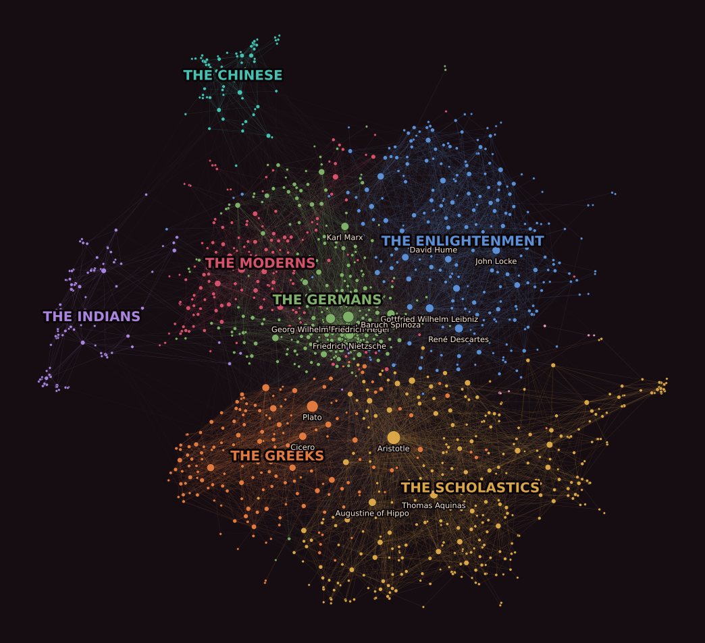

The seating plan, or where does Aristotle sit?
Three weeks of Marvel, and this week the course handed everyone a new network: the philosophers. We took it, because communities are a question about traditions, and traditions are what philosophy is made of. A community, it turns out, is a table at a dinner, modularity is how well the seating matches the friendships, and the algorithm that seats the room best cannot make up its mind about the most linked guest of all.
- Louvain seats the philosophers at nine tables with modularity 0.508: the Scholastics, the Germans, the Enlightenment, the Greeks, the moderns, the Indians, the Chinese, six Poles and a table for two.
- 0.508 means something because a shuffled network scores 0.222. Every philosopher keeps their number of links and the traditions vanish; what is left is what any network with these degrees scores.
- Time explains less than half of it. Seating everyone by the century they were born in scores 0.358, and agrees with Louvain to an NMI of only 0.44. The tables are traditions, not generations.
- Louvain does not agree with itself. Twenty runs, twenty seatings, NMI between them from 0.60 to 0.83. 705 philosophers never move. Aristotle moves in 12 of 19 runs, between the Greeks and the Scholastics.
- So we made you the host. SYMPOSIUM hands you one philosopher and 3, 5 or 9 seats; the score is the table’s links above chance, one table’s share of modularity. The best table around Kant is the Jena circle, around Aristotle the Neoplatonists, and a greedy host loses to one look ahead.
What we asked
- What is a community, if it is not a clique? A group with more links inside than a shuffled network would put there. We wanted to see that definition do work, on people whose groups have names.
- What does Louvain find on the philosophers, and compared to what? Nine tables and a number, then the same number on a shuffled network, on a random network, from a greedy merger, and from a historian who only knows birth centuries.
- How stable is the answer? The course page warns that Louvain depends on its random seed. We ran it twenty times and asked who moves, and found that the question “which tradition is Aristotle really in?” is one the algorithm answers differently every other run.
- Can a person do this by hand? Not for 1374 guests. But one table, built seat by seat and scored the way Louvain scores, yes, and that became the game.
I.A community is a table
The course page defines a community as a set of nodes more densely connected among themselves than with the rest, and warns straight away that “everyone connected to everyone” is the wrong bar: on the philosophers, the largest group where everyone links to everyone has a handful of members, and the traditions are hundreds. So the definition has to be statistical. Modularity is the standard one. For a seating plan, a partition of the guests into tables, count the links inside each table, and subtract what a network with the same links, shuffled so that every guest keeps their number of links, would have put inside that table by chance:
Q = Σtables [ links inside ÷ m − (degree sum ÷ 2m)² ]
Everyone at one table scores exactly zero, which is the first thing the game teaches: seat one philosopher and the whole room follows, and Q reads 0.000. Split the room where the links are thin and Q climbs. Split it where the links are thick and Q falls, because you are now paying the degree term for two tables and getting the inside links of neither.
Louvain is the algorithm the course page runs. It moves guests one at a time to whichever neighbouring table raises Q most, then treats each table as one big guest and repeats. On the philosophers’ giant component it finds nine tables. We named them after who sits there.

| Table | Guests | Who sits there (most linked first) | When they were born |
|---|---|---|---|
| the Scholastics | 320 | Aristotle, Thomas Aquinas, Augustine of Hippo, Jesus, Avicenna | 11th–14th c. (169), 1st–10th c. (86) |
| the Germans | 275 | Immanuel Kant, Hegel, Friedrich Nietzsche, Baruch Spinoza, Karl Marx | 19th c. (204), 18th c. (57) |
| the Enlightenment | 256 | René Descartes, Leibniz, John Locke, David Hume, Isaac Newton | 18th c. (100), 17th c. (81) |
| the Greeks | 176 | Plato, Cicero, Diogenes Laertius, Heraclitus, Socrates | BC (108), 1st–10th c. (50) |
| the moderns | 155 | Bertrand Russell, Henri Bergson, William James, Albert Einstein, C. S. Peirce | 19th c. (153) |
| the Indians | 109 | The Buddha, Adi Shankara, Rabindranath Tagore, Madhvacharya, Nagarjuna | 1st–10th c. (34), 11th–14th c. (32) |
| the Chinese | 75 | Confucius, Zhu Xi, Mao Zedong, Laozi, Mencius | BC (32), 19th c. (14) |
| the Poles | 6 | Władysław Tatarkiewicz, Feliks Koneczny, Hugo Kołłątaj | 18th–19th c. |
| a table for two | 2 | Jules Barthélemy-Saint-Hilaire, Jules Lequier | 19th c. |
Louvain’s nine communities on the giant component, seed 17 of 20, the run with the highest Q. Names are ours; the algorithm only returns sets.
The first surprise is in the first row. Aristotle, the most linked philosopher on Wikipedia with 300 links, does not sit with Plato. He sits with Aquinas, Augustine and Avicenna, at the table of the people who spent a thousand years commenting on him. Plato’s table is the one with Socrates, Cicero and Heraclitus. By the links, Aristotle is a medieval philosopher. Hold that thought; section III is about how sure the algorithm is.
II.Compared to what
A modularity of 0.508 is not a finding until you know what nothing looks like. The course page says so, and it is the habit this site has had since week 2: shuffle, then compare. We did it four ways.
The degree-preserving shuffle is the honest zero. Rewire the 9139 links at random while every philosopher keeps exactly their number of links, then let Louvain do its best: 0.222, give or take 0.002. That is not zero, and the course page explains why: on a sparse network Louvain can always find a seating with some links inside, and the fewer links per node, the more of them it can capture. The number to remember is not 0.508 but the gap, 0.508 against 0.222. A plain random network with the same number of links scores a little higher, 0.233, because without hubs the degree term is smaller for every table.
Greedy modularity starts with 1374 tables of one and repeatedly merges the pair that raises Q most. It reaches 0.416 with fifteen tables and agrees with Louvain to an NMI of 0.54. It loses because it can only merge; a philosopher seated early at the wrong table can never leave. Louvain’s first phase is exactly that leaving, and it is worth 0.09 of modularity here.
The historian seats everyone by the list they came from: born BC, 1st to 10th century, and so on, seven tables. That scores 0.358. It is a real seating, well above the shuffle, so the centuries do carry structure. But its NMI against Louvain is 0.44: the tables Louvain finds are only partly generations. The Scholastics span a thousand years, the Indians span two thousand, and the 19th century is split three ways between the Germans, the moderns and half of the Chinese.
III.Louvain against Louvain
Louvain visits the guests in random order, so it depends on its seed. We ran it twenty times. The scores barely move: from 0.4885 to 0.5081. The seatings move a lot. NMI between two runs ranges from 0.60 to 0.83, with a mean of 0.72, which is the range the course page reports for this network. Two runs with nearly the same Q can seat a fifth of the room differently.
So who moves? We took the best run as the reference, matched every other run’s tables to it by largest overlap, and counted, for every philosopher, in how many of the 19 other runs they ended up at a different table.
- 705 of 1374 never move. Plato, Socrates, Cicero, Augustine, Locke and Boethius are at the same table in all twenty runs. The core of each tradition is not in doubt.
- 135 move in ten runs or more. They are the border: Alexandre Koyré, Émile Durkheim, Georges Bataille, Herbert Spencer, John Henry Newman, a French sociologist here, a Victorian polymath there, people whose articles link into two traditions at once.
- Aristotle moves in 12 of 19 runs. Sometimes he is a Scholastic, sometimes a Greek. Plotinus, the Neoplatonist between the two, moves in 11. Spinoza moves in 8, between the Enlightenment and the Germans. Marx moves in 5. Descartes and Leibniz in 2. Kant in none.
Which tradition is Aristotle really in? The links say: the one that read him most. The algorithm says: ask me again with another seed. Both answers are true, and the second is the one to put in a report.
This is what NMI is for. A single Louvain run with Q = 0.508 sounds like an answer. Twenty runs with a mean self-agreement of 0.72 are the honest version of it: the big tables are real, the borders between them are not, and the most linked philosopher in the network sits on a border.
IV.Then we made you the host
Nobody can seat 1374 guests by hand, and the course’s explorables show Louvain doing it, one move at a time. We wanted the opposite: one table, built by a person, scored the way Louvain scores. SYMPOSIUM hands you a philosopher, Kant say, at the head of an empty table with 3, 5 or 9 seats, and a list of everyone linked to the table. You fill the seats. The score is the table’s share of modularity, times the 9139 links in the network, which turns it into a number you can count: the links inside the table minus the links a shuffled network would have put there. We call it links above chance.
links above chance = links inside − (degree sum)² ÷ 4m
That second term is the whole game. It grows with the square of the guests’ total links, so a hub costs more than a modest name with the same friends. Kant links to Hegel, and Hegel has 152 links; seat him and chance expects a lot. Seat Fichte, Schelling, Reinhold, Jacobi and Fries instead, five names with 11 to 69 links each who all cite each other, and the table holds 15 links where chance expects 3.7: 11.3 above chance, the best five-seat table our search found around Kant. Around Aristotle the best long table is not the Greeks at all but the Neoplatonist commentators, Proclus, Damascius, Simplicius, Hypatia. Around Confucius it is the Warring States, Xunzi, Mozi, Han Fei, Shang Yang. The communities of section I, rediscovered one table at a time.
When you serve dinner, three rival hosts sit down. The greedy host adds whoever raises the score most, one seat at a time, and never looks ahead; on Kant’s five-seat table it reaches 3.8, because the safest first pick is a nobody with one link, and the safest second pick is another. The best found comes from a swap search that keeps trading one guest for one candidate until nothing improves, and it is the number to beat. A random host draws from the host’s friends: 2.6 above chance for Kant, below zero for Aristotle, because Aristotle’s friends are hubs. The score screen also says how many of your guests Louvain seats at the same table as your host, which is the bridge back to sections I to III.
The second mode, the whole room, is the same idea at full scale: 6, 12 or 20 place cards, everybody else sits where most of their friends sit, ring by ring, until the room settles, and the score is Q for all 1374. That rule is label propagation, seeded by you. Louvain, the greedy merger, the historian and a random host seat the same room, and the reveal lists the guests you and Louvain disagree on, with how often Louvain disagrees with itself about them. Three cards, Plato, Kant and Aquinas, score 0.37; the gap to 0.51 is the borders again, because a head count cannot see the degree term.
What surprised us
- Aristotle is medieval. By the links, the most-read Greek sits with his commentators, not his teacher, and Louvain changes its mind about it in twelve runs out of nineteen.
- The historian is not bad. Birth century alone scores 0.358, more than half of Louvain. Philosophy does happen in time. It just happens more in traditions.
- A shuffled network scores 0.22. Anyone reporting a modularity of 0.3 on a sparse network as “community structure” has found the null.
- Greedy loses by never leaving. The one thing Louvain adds, letting a guest change tables, is worth 0.09 of Q on this network.
- Greedy loses at one table too. Adding the safest guest each time gives Kant a five-seat table at 3.8 links above chance; swapping until nothing improves gives 11.3 with the same five seats. One look ahead is worth a factor of three.
- Aristotle’s best table is Neoplatonist. The nine guests who beat chance by most around the most linked philosopher are his late-antique commentators, not Plato and the Athenians. His Greek friends are hubs, and hubs are expensive.
Reproduce it
Two scripts build everything on this page and in the game; a third checks the game’s engine against networkx by running the shipped file under node.
git clone https://github.com/Oddvar112/Social-Graphs-and-Interactions
cd Social-Graphs-and-Interactions
python scripts/build_week4_data.py --png assets/figures # Louvain x20, greedy, the century seating, both nulls,
# the layout and the figure -> data/week4_symposium.js
python scripts/fetch_week4_images.py # portrait URLs from Wikipedia -> data/week4_images.js
python scripts/test_symposium_rules.py # runs weeks/week4/game/core.js under node, diffs vs networkx
python -m http.server 8000 # then open http://localhost:8000/weeks/week4/game/The philosophers files are the course’s frozen snapshot, unmodified, in the repository root. Every number
quoted above is printed by build_week4_data.py and written into the data file the game reads, and the
test fails if the two ever disagree. The portraits are the lead images of the Wikipedia articles, loaded from
Wikipedia as you play and credited on the card; we store only their URLs.